|
ディスクとFDDの使い方 |
|
ディスクの概要 |
ディスクのデータは円周単位に並べられています、ま ずディスクの表と裏の選択が必要です、サイド0、1 と言 います。ディスクの片面は3.5 インチの場合では40～80 の円周があり、これをトラックと言います、両面のトラッ クを合わせてシリンダと言います、トラックは番号で区 別されるので、これも選択します。これらはFDD の機 械的な操作により選択されるものです。トラックは円で すから連続した磁気テープと理解したら良いでしょう、 磁気テープのひと巻きがシリンダであり両面で2 個のト ラックがあると考えられます。
|
トラック上の記録方式 |
トラック上にあるデータの操作はシリアル通信に似て います。シリアル通信は同期通信と非同期通信がありま すがトラックデータの操作は同期通信の方に似ていま す。すなわちトラック上に記録されたデータは読み取り のタイミングに必要なデータと通常のデータが混在して います。タイミングのために記録されたビットをクロッ クビットと呼びます、このビットに同期してデータビッ トを読み取っていきます。クロックビットとデータビッ トの組み合わせ方には FM (Frequency Modulation) と MFM (Modified Frequency Modulation) の二つの方式があります。 MFM は FM に比べて2 倍の密度でデータ が記録できます。クロックビットとデータビットの分離 には専用のデータセパレータと呼ぶハードウェアを用意 します。アナログとディジタルの両方式がありますが通 常はアナログ方式の方が高性能とされています。本稿の FDCではディジタル方式のデータセパレータを内臓して います。トラック上の記録方式はドライブとは無関係なの で自作で他との互換性も考慮する必要のないシステムで FDCを自作する場合には独自の方式を考案して使うこと も可能です。 図1 は両方式の比較です、原理は次のよ うになっています。これらは 文献[1] からの引用です。
| 図1: FM,MFM 記録方式 |
|
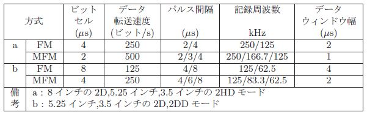 |
FM 方式の原理
MFM方式の原理
FM 方式の例を 図2 に示します。データ0 が最低 の記録密度でデータFF が最高の記録密度です。 MFM 方式の例を 図3 に示します。データ0 とFF が最高 の記録密度です。 FM 方式で最高の記録密度のデータを MFM 方式で記録すると FM 方式の最低の記録密度で記 録できます。 MFM 方式なら一番高い記録密度が FM 方式の一番低い記録密度と同じになりますから、記録周波 数を2 倍にしても FM 方式の最高密度と同じビット密 度で記録できることになります。すなわち MFM 方式 は FM 方式と同じディスクメディアに2 倍の容量で記録 できるように改良された方式です。 FM 方式を単密度、 MFM 方式を倍密度と呼ぶことがあります。本FDC で はユーザが上記の変換操作について関わる必要がないよ うにしています。
| 図2: FM 方式の例 |
|
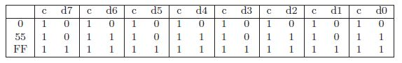 |
| 図3: MFM 方式の例 |
|
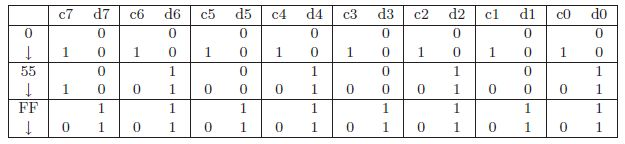 |
|
トラックフォーマットの概要 |
トラックデータからデータビットを分離して、これを 8 ビットにまとめてバイトデータとして読み出します。 トラックに記録されているバイトデータは一般的にIBM トラックフォーマットが使用されています。記録方式と 同じようにオリジナルのトラックフォーマットを考案す ることもできます。本FDC ではIBM 方式を採用してい ます。記録方式やトラックフォーマットの仕様に従って ディスクを操作するのがFDCの中心機能です。ドライブ との電気的インターフェースや機械的な制御は記録方式 やトラックフォーマットとの関係は薄いのでFDD イン ターフェースの変更は必要ないと思います。新しい記録 方式やトラックフォーマットを考案した場合には、FDC の中心機能を新しい仕様で設計する必要があります。
|
セクタ |
IBM トラックフォーマットはトラックをいくつかに 分割して、そのひとつをセクタと言っています。ユーザ はディスクを操作するときトラック中のセクタを指定し ます、FDC はFDD が回転するディスクから読み出し たシリアルデータを解析しながらディスクが指定セクタ の円周位置まで回転しているかどうかを探ります。この 間、ディスクは常に一定の速度を保ちながら回転してい ます。FDD は回転し続けるディスクに対して読み出し や書き込みを実施します。セクタは属性データを記録す る場所とユーザデータを記録するふたつの場所がありま す。これらはID フィールドとデータフィールドと呼ば れます。ID フィールドの中にセクタ番号の情報が記録 されています、FDC はこの番号が目的のセクタの番号 と一致するセクタを探します。
IDフィールド
セクタの位置情報とサイズを記録して います。位置情報とはメモリで言えばアドレスのような ものです、ディスクの場合ならシリンダ番号、ヘッド番 号、セクタ番号でディスク上の位置を指定します。メモ リの場合なら直接デバイスに指定すれば済むことですが ディスクの場合は、そのデータからFDC が探し当てね ばなりません。
DATAフィールド
実際にユーザのデータを記録して いるところです。何バイト記録できるかはID フィール ドに示されています。このサイズから現在一般的に使わ れている3.5 インチの全ディスク容量を計算してみると 512×18×80×2 = 1474560 = 1.44MB になります。こ の計算の根拠は 図4 によるものです。この表の最初の ふたつはNEC のパソコンPC9801 で使われていたディ スクの仕様です、現在使われているディスク仕様は後の ふたつですがIBM パソコンまたは、その互換機で使わ れていたものです。この両者ではトラックフォーマット も違いますが、パラメータを合わせただけでは操作でき ません、この両者のFDD の仕様ではディスク回転数な どが異なっているからです。古いPC9801 のFDD の再 利用を検討される人は注意して下さい。
| 図4: 3.5 インチディスクの仕様 |
|
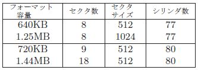 |
|
IBMトラックフォーマット |
本FDC はIBM トラックフォーマットをサポートし ています。このフォーマットの主要な構造については先 述したようにトラックはいくつかのセクタの集まりとし て構成されています。トラックフォーマットにはデータ を記録する形式を定義していますが、その他にも重要な 機能が定義されています。
|
データで同期を取る |
ディスク上のデータはFDD によってシリアルデータ としてFDC に送られてきます。FDD はディスクが1 回 転するごとに1 個のパルスを出力しています、これを インデックスパルスと言います。IBM トラックフォー マットはこのパルスの前縁をトラックの始まりとしてセ クタ1,2,3～最終セクタと定義されています。セクタの ID フィールドとデータフィールドのそれぞれの先頭に は同期をとるためのデータが置かれています。このデー タは0 が採用されていますが FM 方式でも MFM 方式 でもビットパターンはクロックビットのみが等間隔で1 になるようなパターンです。この同期データがFM 方式 で6 バイト、 MFM 方式で12 バイトの連続パターンに なっています。同期データの後にはID フィールドのと きは AM1 がデータフィールドのときは AM2 が続きま す。 図5 を参照して下さい。
| 図5: マークデータ |
|
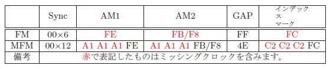 |
同期データとマークデータは組み合わされてトラック 上の指標の機能を果たしています。しかし、これと同じ ビットパターンがデータフィールドに書き込まれたユー ザデータの中にもある可能性があります。これでは指標 の機能が果たせませんので、ある工夫で解決されていま す、 図5 中のミッシングクロックを含むデータがそれ です。ミッシングクロックとは意図的にクロックビット を外して、マークデータのクロックビットを含むビット パターンがマークデータ以外では有り得ないようにし たものです。 FM 方式でのマークデータのビットパター ンは 図6 のようになります。 MFM 方式では FM 方式 のマークデータを同じようにミッシングクロックにする ことができません、 図7 のように最初からクロック ビットが0 になっているからです。 MFM 方式では FM 方式のマークデータにミッシングクロックを持つマーク データを前方に3 個追加して FM 方式と同じように3 個 のミッシングクロックを持つように構成されています。 これらからFDC はクロックビットについても、その値 を保存してチェックできるような構成である必要があり ます。
| 図6: ミッシングクロック(FM) |
|
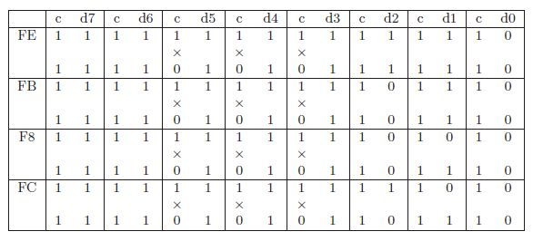 |
| 図7: ミッシングクロック(MFM) |
|
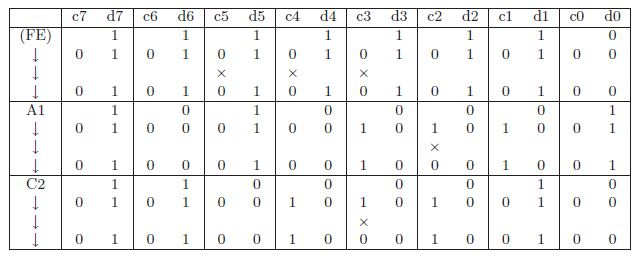 |
|
インデックスマーク |
トラックの始まりではFDD からインデックスパルス も出力されていますがインデックスパルスの前縁からセ クタ1 の間に同期データ→インデックスマークが置か れています。 図5 を参照して下さい。本FDC の設計 に当たってはディスクデータを操作する手順を次のよう に考えました。
|
隙間のデータ |
トラック上に配置されている主な要素については、先 述したとおりです、これらは連続して置かれているので はなく隙間データを挟んで配置されています。ひとつの トラックは 図8 のようになっています。セクタの詳細は 図9 のようになっています。
| 図8: IBM トラックフォーマット |
|
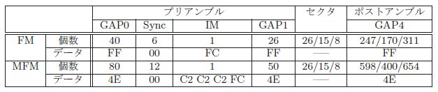 |
| 図9: セクタフォーマット |
|
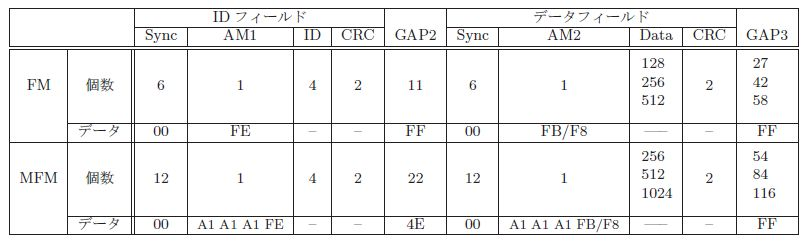 |
各要素の始まりには同 期データがあり、その後にはマークデータが続いていま す、トラック全体はシステムやユーザのデータで埋め尽 くされていると考えて構いません。トラックの最初で同 期が取れてインデックスマークが読めても、トラックの 最後まで同期が維持できるかどうかは疑問です、また同 期を外した事がすぐに分かる仕掛けもありません。通常 のディスクの書き込みはセクタ単位で行います、データ フィールドの AM2 を通過してからユーザデータを転送 するタイミングは適正な位相でビットが記録されるよう に制御しますが、 CRC の最後のビットの記録が終わっ たときには、前に記録されたビットとの連続性は壊れて いるので、セクタの書き継ぎ点で同期を外してしまう懸 念があります。通常は CRC に連続して GAP3 を最低1 個は書いてあるはずなのでCRC の読み出し直後に同期 を取り直すようにします。 GAP3 の後には(次のセクタ の先頭) 必ず同期データがありますから、次のセクタの 先頭で同期を取り直せるはずです。他の要素については フォーマット(ディスク初期化) 時にトラックの先頭か ら最後まで一気に書き込まれるので書き継ぎ点はあり ません。他にFDD のヘッドの状態や回転精度、ディス クの変形などで同期が取れなくなることが考えられます が、その場合には隙間データと同期データとマークデー タが正しく読めないので同期を外した事は分かると思い ます。そのときは次のインデックスを待って再実行しま す、ディスクやドライブが壊れていることも考えられま すから、規定回数の再実行で目的セクタがつかめない場 合は本FDC ではエラービットを立てて実行を終了しま す。トラックの持つセクタの個数によってパラメータが 変化するものについて 図10 、 図11 にまとめました。
|
|
|
ディスク初期化 |
トラック上にはユーザデータの他に通信制御やデー タ管理のデータが置かれています。これらのユーザデー タ以外のデータはディスク初期化時に書き込まれます。 ディスクの初期化は通常、ディスクをフォーマットする と言いDOS のFORMATコマンドで行っていた事です。 ディスクを操作する単位はトラックなのでフォーマット もトラック単位に行います。DOS のシステムコマンド はFDC と一体になってディスク1 枚の全トラックを初 期化します。フォーマット時のトラックデータはすべて のトラックに同じデータを書けばよさそうですが 図12 を見るとシリンダ番号とヘッド番号の項目がトラック によって違うはずです、またセクタの ID フィールドの CRC も異なってきます。他に隙間データなども書き込 まねばならずトラックフォーマットについて完全に把握 している必要もあります。ディスク操作用のシステムプ ログラムの負担の軽減のために本FDC ではトラックを 指定するだけで書き込みビットパターンの生成などは FDC が自動的に行うようにしています。
| 図12: ID 情報 |
|
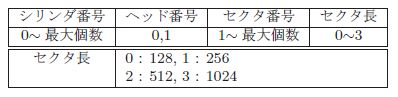 |
|
FDDの機械的制御 |
目的のトラックを操作するためにはヘッドをトラック のある位置に移動させて、ヘッドの表裏を選択すること で目的トラックの操作の準備が完了します。
|
ヘッドの移動でトラックを選択する |
FDDから知ることのできるヘッドの位置情報は、ヘッ ドがトラック00 にあるかどうかの信号 Track00 だけです。現在のトラック位置が00 以外のどこにあるか分か らないときは、ヘッドを信号 Track00 が真になるまで移動して取りあえずトラック00 の位置にします。ヘッ ドを移動させるには信号 Step に1 パルスを出力すると1 トラック移動します。ディスクの最外周にトラック00 が位置していますが移動方向は信号 Direction で指定します。トラックの位置はトラック00 の位置から移動 した経過を累算して把握することになります。トラック を読めばセクタの ID フィールドにあるシリンダ番号と照合して確認することもできます。
|
シリンダ番号とトラック番号 |
フロッピーディスクに関連した文献を読んでいて少な からず混乱してしまった事についてお話しします。両面 ディスクのトラックの個数はシリンダ個数の2 倍ありま す、しかし番号はシリンダと同じ数しかありません。こ れはシリンダ00 の表裏をトラック00 のサイド0、サイ ド1 としているからです、つまり野球の回の進行を1 回 の表裏、2 回の表裏・・・と進めているのに似ています。 シリンダとはディスクの部分に付けられた物理的な名称 です、トラックは運用的な面からシリンダに付けられた 論理的な名称と言えると思います。
|
待ち時間 |
ディスクを操作するまでには先述した事以外にもディ スクの回転やヘッドのディスク面への接触の指令などを FDD に行いますが、これらは、いつ機械的に安定した 状態になったかを直接知る手立てがありません。これら は一定以上の時間の経過後に安定状態に達したものとし て制御を進めます。次にそれぞれの説明を 文献[1] から 引用します。3.5 インチFDD にのみ関しての説明では ありませんが、十分参考になります。
3.5 インチFDD の仕様の例ではステップセトリング 時間は30ms、ヘッドロード時間は30ms くらいの値で す。本FDC ではこれらの待ち時間についてユーザ側で 設定が可能になっています。
|
ディスク操作の準備 |
ディスクのトラックを操作するまでのFDD の操作と 順番について述べます。
上記、手順後に信号 Read Data からディスクの目的ト ラックに記録されたデータが送られて来ます。これ以降 はトラックデータと同期を取って読み出し操作に入り ます。
|
PC用3.5 インチFDD |
PC 用の3.5 インチFDD は34 ピンのフラットケーブ ルで 図13 の様な接続になっています、これで2 台の ドライブが使えます、PC で2 台目のドライブを接続す るときはケーブルの10 と16、12 と14 番を入れ替える クロスケーブルで行いFDD 側の設定をしないのが通常 の使い方です。
| 図13: PC 用コネクタ |
|
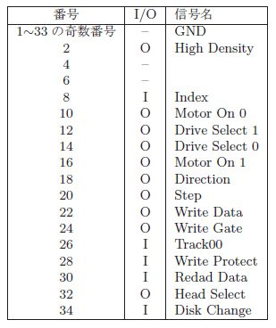 |
|
文献 |
[1] 高橋昇司. フロッピ・ディスク装置のすべて. I/F ESSENCE. CQ 出版株式会社, 1989.